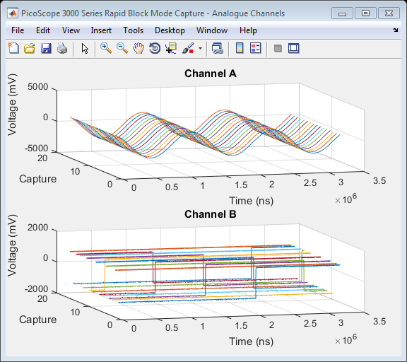
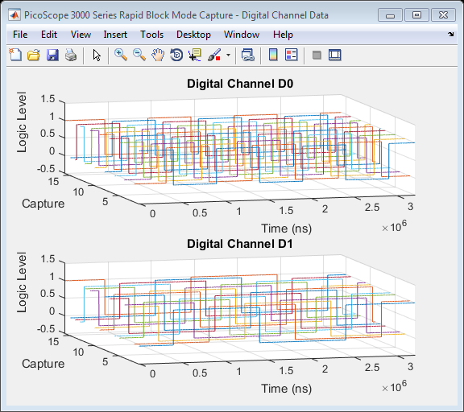

PS3000A_IC_GENERIC_DRIVER_RAPID_BLOCK_PLOT3D_MSO
This is an example of an instrument control session using a device object. The instrument control session comprises all the steps you are likely to take when communicating with your instrument. These steps are:
1. Create a device object 2. Connect to the instrument 3. Configure properties 4. Invoke functions 5. Disconnect from the instrument
To run the instrument control session, type the name of the file, PS3000A_IC_Generic_Driver_Block_Plot3D_MSO, at the MATLAB command prompt.
The file, PS3000A_IC_GENERIC_DRIVER_BLOCK_PLOT3D_MSO.M must be on your MATLAB PATH. For additional information on setting your MATLAB PATH, type 'help addpath' at the MATLAB command prompt.
Example: PS3000A_IC_Generic_Driver_Block_Plot3D_MSO;
Description: Demonstrates how to call functions in order to capture data in Rapid Block Mode from a PicoScope 3000 series mixed signal oscilloscope using the underlying 'A' API.
See also ICDEVICE.
Copyright: Pico Technology Limited 2014 - 2015
Author: KPV
History:
15Apr15 HSM Modified script for publishing.
Contents
Suggested Input Test Signals
This example was published using the following test signals:
- Channels A and C: 4Vpp, 850Hz sine wave
- Channels B and D: 2Vpp, 100Hz square wave
- Digital Channels D0 - D7: Test pattern output with base frequency of 2kHz
Clear Command Window
clc;
Load Configuration Information
PS3000aConfig;
Device Connection
% Create a device object. % The serial number can be specified as a second input parameter. ps3000aDeviceObj = icdevice('picotech_ps3000a_generic.mdd', ''); % Connect device object to hardware. connect(ps3000aDeviceObj);
Copyright (C) Pico Technology Ltd. 2014 - 2015
PicoScope 3000 Series MATLAB Instrument Driver
Number of units found: 1
Serial number(s): CQ484/007
Opening PicoScope 3000 Series device...
Instrument Device Object Using Driver : picotech_ps3000a_generic.mdd
Instrument Information
Type: Oscilloscope
Manufacturer: Pico Technology Ltd.
Model: PicoScope 3000 Series (A API)
Driver Information
DriverType: MATLAB generic
DriverName: picotech_ps3000a_generic.mdd
DriverVersion: 1.2.14
Communication State
Status: open
Setting Device Parameters...
Default Analogue Channel Setup:-
--------------------------------
Channel A:-
Enabled: True
Coupling: DC
Range: 5V
Analogue Offset: 0.0V
Channel B:-
Enabled: True
Coupling: DC
Range: 5V
Analogue Offset: 0.0V
Channel C:-
Enabled: True
Coupling: DC
Range: 5V
Analogue Offset: 0.0V
Channel D:-
Enabled: True
Coupling: DC
Range: 5V
Analogue Offset: 0.0V
Default Digital Port Setup:-
----------------------------
Port D0:-
Enabled: True
Logic Level: +1.5V
Port D1:-
Enabled: True
Logic Level: +1.5V
Turning off Equivalent Time Sampling...
Turning off trigger...
Default Block mode parameters:-
Timebase index : 64
Time Interval: 496.0 ns
Number of pre-trigger samples: 0
Number of post-trigger samples: 1000000
Total number of samples: 1000000
Default Streaming mode parameters:-
Streaming interval: 1.00e-06 s
Streaming auto stop: 1
Default Signal generator parameters:-
Start frequency: 1000 Hz
Stop frequency: 1000 Hz
Offset voltage: 0 mV
Peak to Peak voltage: 2000 mV
Initialisation complete.
Connected to PicoScope 3000 Series device:-
Instrument Model: 3405DMSO
Batch/Serial Number: CQ484/007
Analogue Channels: 4
Digital Channels: 16
Bandwidth: 100 MHz
Buffer memory: 256 MS
Maximum sampling rate: 1 GS/s
Signal Generator Type: Arbitrary Waveform Generator
Set Analogue and Digital Channels
Default driver settings applied to channels are listed below - use ps3000aSetChannel to turn channels on or off and set voltage ranges, coupling, as well as analogue offset.
% In this example, data is collected on all Analogue Channels using % default settings and also on the Digital Port 0 channels (D0 - D7) % while Digital Port 1 (D8 - D15) is switched off. % Channels : 0 - 3 (ps3000aEnuminfo.enPS3000AChannel.PS3000A_CHANNEL_A - PS3000A_CHANNEL_D) % Enabled : 1 % Type : 1 (ps3000aEnuminfo.enPS3000ACoupling.PS3000A_DC) % Range : 8 (ps3000aEnuminfo.enPS3000ARange.PS3000A_5V) % Analogue Offset: 0.0 % To turn off Channels B, C and D, uncomment the code block below % [status.setChB] = invoke(ps3000aDeviceObj, 'ps3000aSetChannel', 0, 1, 1, 8, 0.0); % % if(ps3000aDeviceObj.channelCount == PicoConstants.QUAD_SCOPE) % % [status.setChC] = invoke(ps3000aDeviceObj, 'ps3000aSetChannel', 2, 0, 1, 8, 0.0); % [status.setChD] = invoke(ps3000aDeviceObj, 'ps3000aSetChannel', 3, 0, 1, 8, 0.0); % % end % Use ps3000aSetDigitalPort to set enable/disable digital ports and set the % logic level threshold. This function is located in the Instrument % Driver's Digital Group. Enabling a digital port will enable all channels % on that port. digitalObj = get(ps3000aDeviceObj,'Digital'); % Digital Ports : 128 (ps3000aEnuminfo.enPS3000ADigitalPort.PS3000A_DIGITAL_PORT0) % Enabled : 1 (On) % Logic Level : 2.5V status.setD0 = invoke(digitalObj, 'ps3000aSetDigitalPort', evalin('base', 'ps3000aEnuminfo.enPS3000ADigitalPort.PS3000A_DIGITAL_PORT0'), 1, 2.5); % Digital Ports : 129 (ps3000aEnuminfo.enPS3000ADigitalPort.PS3000A_DIGITAL_PORT1) % Enabled : 0 (Off) % Logic Level : 0V status.setD1 = invoke(digitalObj, 'ps3000aSetDigitalPort', evalin('base', 'ps3000aEnuminfo.enPS3000ADigitalPort.PS3000A_DIGITAL_PORT1'), 0, 0);
Set Memory Segments
Configure number of memory segments, ideally a power of 2, query ps3000aGetMaxSegments to find the maximum number of segments for the device.
% nSegments : 128 [status.memorySegments, nMaxSamples] = invoke(ps3000aDeviceObj, 'ps3000aMemorySegments', 16); % Set number of samples to collect pre- and post-trigger. Ensure that the % total does not exceeed nMaxSamples above. set(ps3000aDeviceObj, 'numPreTriggerSamples', 2500); set(ps3000aDeviceObj, 'numPostTriggerSamples', 7500);
Verify Timebase Index
Use ps3000aGetTimebase2 to query the driver as to suitability of using a particular timebase index then set the 'timebase' property if required.
% timebase : 42 % segment index : 0 [status.getTimebase2, timeIntNs, maxSamples] = invoke(ps3000aDeviceObj, 'ps3000aGetTimebase2', 42, 0); % Configure property value(s). set(ps3000aDeviceObj, 'timebase', 42);
Set Simple Trigger
Set a trigger on Channel A with an auto timeout - the default value for delay is used.
% Trigger properties and functions are located in the Instrument % Driver's Trigger group. triggerGroupObj = get(ps3000aDeviceObj, 'Trigger'); triggerGroupObj = triggerGroupObj(1); % Set the autoTriggerMs property in order to automatically trigger the % oscilloscope after 1 second if a trigger event has occurred. Set to 0 to % wait indefinitely for a trigger event. set(triggerGroupObj, 'autoTriggerMs', 1000); % Channel : 0 (ps3000aEnuminfo.enPS3000AChannel.PS3000A_CHANNEL_A) % Threshold : 500 (mV) % Direction : 2 (ps3000aEnuminfo.enPS3000AThresholdDirection.PS3000A_RISING) [status.setSimpleTrigger] = invoke(triggerGroupObj, 'setSimpleTrigger', 0, 500, 2);
Setup Rapid Block Parameters and Capture Data
% Rapid Block specific properties and functions are located in the Instrument % Driver's Rapidblock group. rapidBlockGroupObj = get(ps3000aDeviceObj, 'Rapidblock'); rapidBlockGroupObj = rapidBlockGroupObj(1); % Set the number of waveforms to captures % nCaptures : 16 [status.setNoOfCaptures] = invoke(rapidBlockGroupObj, 'ps3000aSetNoOfCaptures', 16); % Block specific properties and functions are located in the Instrument % Driver's Block group. blockGroupObj = get(ps3000aDeviceObj, 'Block'); blockGroupObj = blockGroupObj(1); % Capture the blocks of data % segmentIndex : 0 [status.runBlock, timeIndisposedMs] = invoke(blockGroupObj, 'runBlock', 0); % Retrieve Rapid Block Data % numCaptures : 16 % ratio : 1 % ratioMode : 0 (ps3000aEnuminfo.enPS3000ARatioMode.PS3000A_RATIO_MODE_NONE) [numSamples, overflow, chA, chB, chC, chD, portD0, portD1] = invoke(rapidBlockGroupObj, 'getRapidBlockData', 16, 1, 0); % Stop the Device [status.stop] = invoke(ps3000aDeviceObj, 'ps3000aStop');
runBlock:- Collecting block of data: Timebase: 42 Pre-trigger samples: 2500 Post-trigger samples: 7500 runBlock: Waiting for device to become ready... runBlock: Device ready. getRapidBlockData: Retrieving data... getRapidBlockData: Retrieving digital port data and assigning to port array. getRapidBlockData: Converting Analogue channels to milliVolts and assigning to channel array. getRapidBlockData: Data succesfully retrieved.
Convert Digital Data to Binary Format
Each sample value for a digital port is returned as a 16-bit integer with the data in the lower 8-bits of the 16-bit value. The values are Most Significant Bit (MSB) ordered.
% Allocate memory for the number of digital channels x segments D0 = zeros(numSamples, 8, 16); disp('Converting digital data into binary array...'); % Use the bitget function to retrieve the bit value corresponding to the % digital channel for each segment. The values are Most Significant Bit (MSB) % ordered, with the data in the lower 8-bits of the 16-bit value. % This process may take a little while depending on the number of samples % collected. for segment = 1:16 for sample = 1:numSamples D0(sample,:, segment)= bitget(portD0(sample, segment), 8:-1:1, 'int16'); end end disp('Digital data conversion complete.');
Converting digital data into binary array... Digital data conversion complete.
Process data
Plot data values in 3D showing history.
% Calculate time (nanoseconds) and convert to milliseconds % Use timeIntervalNanoSeconds output from ps3000aGetTimebase2 or calculate % from Programmer's Guide. timeNs = double(timeIntNs) * double([0:numSamples - 1]); % Plot Analogue Channels - only Channel A and B data is plotted in this % example. figure1 = figure('Name','PicoScope 3000 Series Rapid Block Mode Capture - Analogue Channels', ... 'NumberTitle','off'); movegui(figure1, 'northwest'); % Channel A subplot(2,1,1); % Uncomment this line for a 4 channel plot % subplot(2,ps3000aDeviceObj.channelCount/2,1) hold on; for i = 1:16 plot3(timeNs, i * (ones(numSamples, 1)), chA(:, i)); end title('Channel A'); xlabel('Time (ns)'); ylabel('Capture'); zlabel('Voltage (mV)'); view([-15 24]); grid('on'); % Channel B subplot(2,1,2); % Uncomment this line for a 4 channel plot % subplot(2,ps3000aDeviceObj.channelCount/2,2) hold('on'); for i = 1:16 plot3(timeNs, i * (ones(numSamples, 1)), chB(:, i)); end title('Channel B'); xlabel('Time (ns)'); ylabel('Capture'); zlabel('Voltage (mV)'); view([-15 24]); grid('on'); % Uncomment this code block to plot data for Channels C and D % if(ps3000aDeviceObj.channelCount == PicoConstants.QUAD_SCOPE) % % % Channel C % subplot(2,2,3) % hold on; % % for i = 1:16 % % plot3(timeNs, i * (ones(numSamples, 1)), chC(:, i)); % % end % % title('Channel C'); % xlabel('Time (ns)'); % ylabel('Capture'); % zlabel('Voltage (mV)'); % view([-15 24]); % grid('on'); % % % Channel D % subplot(2,2,4) % hold on; % % for i = 1:16 % % plot3(timeNs, i * (ones(numSamples, 1)), chD(:, i)); % % end % % title('Channel D'); % xlabel('Time (ns)'); % ylabel('Capture'); % zlabel('Voltage (mV)'); % view([-15 24]); % grid('on'); % % end % Plot Digital Data - only data for digital channels D0 and D1 are plotted % here. figure2 = figure('Name','PicoScope 3000 Series Rapid Block Mode Capture - Digital Channel Data', ... 'NumberTitle','off'); movegui(figure2, 'northeast'); % Change the last value to 7 in order to plot all digital channel data for % Digital Port 0 for i = 0:1 subplot(2,1,i+1); % Uncomment the line below to plot all 8 digital channels for the port % subplot(4,2,i+1); hold on; for segment = 1:16 plot3(timeNs, segment * (ones(numSamples, 1)), D0(:,(8 - i), segment)); end title(strcat('Digital Channel D', num2str(i)), 'FontWeight', 'bold'); xlabel('Time (ns)'); ylabel('Capture'); zlabel('Logic Level'); axis([-inf, inf, -inf,inf, -0.5, 1.5]) view([-15 24]); grid('on'); end 
Disconnect Device
Disconnect device object from hardware.
disconnect(ps3000aDeviceObj);
Close unit status: 0 Device with serial number CQ484/007 closed successfully. Libraries unloaded successfully.